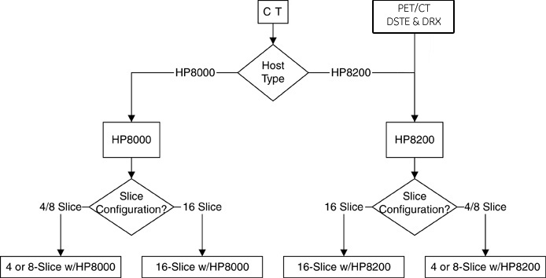

| FX/Xtream Upgrade Steering Guide | |
| Last Revised: | 31 March 2008 |
If executing FMI 25389, proceed to the 07MW11.x SW LFC (GOC3/GOC4) procedure.
If executing the installation of a CT Workflow hardware or software package such as:
B7866PA - WorkFlow FX with HP8000 PC Host Memory (Data Interchange, Data Export, Direct MPR, & Cardiac Enhancement),
B7866PB - WorkFlow FX (Data Interchange, Data Export, Direct MPR),
B7866PC - Xtream II Platform FX with HP8000 PC Host Memory (Add Two Image Generators (IG), GOC3 Console Cooling Package, & Cardiac Enhancement),
B7866PD - Xtream II Platform FX (GOC3 Console Cooling Package),
B7866PE - WorkFlow FX without HP8000 PC Host Memory (Data Interchange, Data Export, Direct MPR, & Cardiac Enhancement),
B7866PF - WorkFlow FX (Data Interchange, Data Export, Direct MPR),
B7866PG - Xtream FX WorkFlow Package with HP8000 PC Host Memory (Add Two Image Generators (IG), GOC3 Console Cooling Package, Data Interchange, Data Export, Direct MPR, & Cardiac Enhancement),
B7866PH - Xtream FX Workflow Package (Add Two Image Generators (IG), Data Interchange, Data Export, & Direct MPR),
Then select the appropriate system type to be upgraded in the navigation frame (found at the left of this screen), and execute the actions listed in its flowchart.
Use the flowchart in this section to determine which install instruction-set is to be used to upgrade your CT system. Then, select the appropriate system type found in the navigation frame located at the left of this screen.
Illustration 1: Hardware Configuration Selection Flowchart

Use the flowchart above to determine your system configuration.
Select the appropriate “folder” from the navigation frame (e.g., “4 or 8-Slice with HP8000”).
Choose the appropriate upgrade package from the list that appears. Upgrade Packages include:
FX Workflow Package
Xtream II Workflow Package
Xtream FX Workflow Package (contains both of the above)
Follow the links on the flowchart to complete the Upgrade.
If HIPAA EA3 installation is required, do this now.